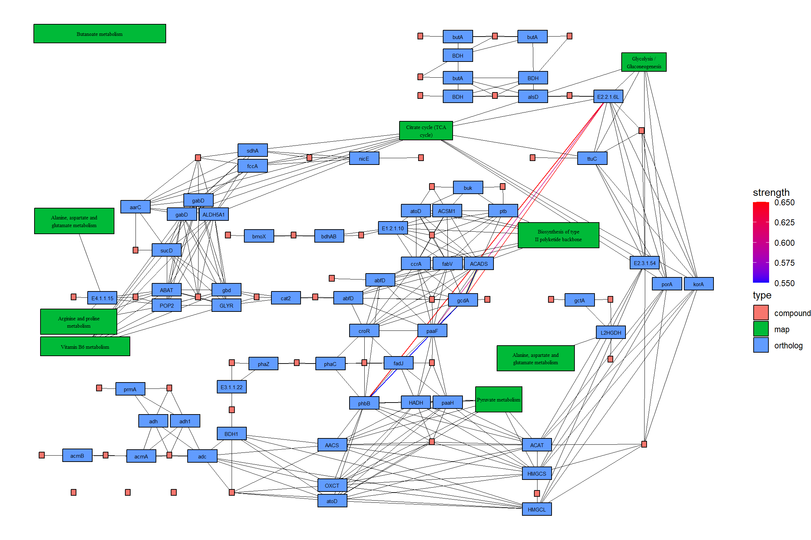

Chapter 5 Usecases
5.1 Visualizing numerical attributes from DESeq2
By providing the results of the DESeq2 package, which is often used for transcriptome analysis, it is possible to reflect numerical results in the nodes of a graph. The assign_deseq2 function can be used for this purpose. By specifying the numerical value (e.g., log2FoldChange) that you want to reflect in the graph as the column argument, you can assign the value to the nodes. If multiple genes are hit, the numeric_combine argument specifies how to combine multiple values (the default is mean).
Here, we use a RNA-Seq dataset that analyzed the transcriptome changes in human urothelial cells infected with BK polyomavirus (Baker et al. 2022). The raw sequences obtained from Sequence Read Archive were processed by nf-core, and subsequently analyzed using tximport, salmon and DESeq2.
library(ggkegg)
library(DESeq2)
library(org.Hs.eg.db)
library(dplyr)
load("uro.deseq.res.rda") ## Storing DESeq() result
res
#> class: DESeqDataSet
#> dim: 29744 26
#> metadata(1): version
#> assays(8): counts avgTxLength ... replaceCounts
#> replaceCooks
#> rownames(29744): A1BG A1BG-AS1 ... ZZEF1 ZZZ3
#> rowData names(27): baseMean baseVar ... maxCooks
#> replace
#> colnames(26): SRR14509882 SRR14509883 ... SRR14509906
#> SRR14509907
#> colData names(27): Assay.Type AvgSpotLen ...
#> viral_infection replaceable
vinf <- results(res, contrast=c("viral_infection","BKPyV (Dunlop) MOI=1","No infection"))
## LFC
g <- pathway("hsa04110") |> mutate(deseq2=assign_deseq2(vinf),
padj=assign_deseq2(vinf, column="padj"),
converted_name=convert_id("hsa"))
ggraph(g, layout="manual", x=x, y=y) +
geom_edge_link(width=0.5, arrow = arrow(length = unit(1, 'mm')),
start_cap = square(1, 'cm'),
end_cap = square(1.5, 'cm'), aes(color=subtype))+
geom_node_rect(aes(fill=deseq2, filter=type=="gene"), color="black")+
ggfx::with_outer_glow(geom_node_text(aes(label=converted_name, filter=type!="group"), size=2.5), colour="white", expand=1)+
scale_fill_gradient(low="blue",high="red", name="LFC")+
theme_void()
## Adjusted p-values
ggraph(g, layout="manual", x=x, y=y) +
geom_edge_link(width=0.5, arrow = arrow(length = unit(1, 'mm')),
start_cap = square(1, 'cm'),
end_cap = square(1.5, 'cm'), aes(color=subtype))+
geom_node_rect(aes(fill=padj, filter=type=="gene"), color="black")+
ggfx::with_outer_glow(geom_node_text(aes(label=converted_name, filter=type!="group"), size=2.5), colour="white", expand=1)+
scale_fill_gradient(name="padj")+
theme_void()
## Adjusted p-values
ggraph(g, layout="manual", x=x, y=y) +
geom_edge_link(width=0.5, arrow = arrow(length = unit(1, 'mm')),
start_cap = square(1, 'cm'),
end_cap = square(1.5, 'cm'), aes(color=subtype))+
geom_node_rect(aes(fill=padj, filter=type=="gene"), color="black")+
ggfx::with_outer_glow(geom_node_text(aes(label=converted_name, filter=type!="group"), size=2.5), colour="white", expand=1)+
scale_fill_gradient(name="padj")+
theme_void()
## Highlighting differentially expressed genes at adjusted p-values < 0.05 with coloring of adjusted p-values on raw KEGG map
gg <- ggraph(g, layout="manual", x=x, y=y)+
geom_node_rect(aes(fill=padj, filter=type=="gene"))+
ggfx::with_outer_glow(geom_node_rect(aes(fill=padj, filter=!is.na(padj) & padj<0.05)),
colour="yellow", expand=5)+
overlay_raw_map("hsa04110", transparent_colors = c("#cccccc","#FFFFFF","#BFBFFF","#BFFFBF"))+
scale_fill_gradient(low="pink",high="steelblue") + theme_void()
ggsave(file="tmp.png",gg,width=20,height=15,dpi=300,units="in")
cowplot::ggdraw()+cowplot::draw_image("tmp.png")
5.2 Integrating matrix to tbl_graph
If you want to reflect an expression matrix in a graph, the append_edge_value and append_node_value functions can be useful. By specifying a matrix and gene IDs, you can assign numeric values for each sample to the tbl_graph. append_edge_value assigns the sum of the two nodes connected by an edge, ignoring group nodes (Adnan et al. 2020).
mat <- assay(vst(res))
new_g <- g |> edge_matrix(mat) |> node_matrix(mat)
new_g
#> # A tbl_graph: 134 nodes and 157 edges
#> #
#> # A directed acyclic multigraph with 40 components
#> #
#> # A tibble: 134 × 47
#> name type reaction graphics_name x y width
#> <chr> <chr> <chr> <chr> <dbl> <dbl> <dbl>
#> 1 hsa:1029 gene <NA> CDKN2A, ARF,… 532 -218 46
#> 2 hsa:51343 gene <NA> FZR1, CDC20C… 981 -630 46
#> 3 hsa:4171 h… gene <NA> MCM2, BM28, … 553 -681 46
#> 4 hsa:23594 … gene <NA> ORC6, ORC6L.… 494 -681 46
#> 5 hsa:10393 … gene <NA> ANAPC10, APC… 981 -392 46
#> 6 hsa:10393 … gene <NA> ANAPC10, APC… 981 -613 46
#> # ℹ 128 more rows
#> # ℹ 40 more variables: height <dbl>, fgcolor <chr>,
#> # bgcolor <chr>, graphics_type <chr>, coords <chr>,
#> # xmin <dbl>, xmax <dbl>, ymin <dbl>, ymax <dbl>,
#> # orig.id <chr>, pathway_id <chr>, deseq2 <dbl>,
#> # padj <dbl>, converted_name <chr>, SRR14509882 <dbl>,
#> # SRR14509883 <dbl>, SRR14509884 <dbl>, …
#> #
#> # A tibble: 157 × 32
#> from to type subtype from_nd to_nd SRR14509882
#> <int> <int> <chr> <chr> <chr> <chr> <dbl>
#> 1 118 39 GErel expression undefi… hsa:… NA
#> 2 50 61 PPrel inhibition hsa:29… hsa:… 24.4
#> 3 50 61 PPrel phosphorylati… hsa:29… hsa:… 24.4
#> # ℹ 154 more rows
#> # ℹ 25 more variables: SRR14509883 <dbl>,
#> # SRR14509884 <dbl>, SRR14509885 <dbl>,
#> # SRR14509886 <dbl>, SRR14509887 <dbl>,
#> # SRR14509888 <dbl>, SRR14509889 <dbl>,
#> # SRR14509890 <dbl>, SRR14509891 <dbl>,
#> # SRR14509892 <dbl>, SRR14509893 <dbl>, …5.3 Visualizing multiple enrichment results
You can visualize the results of multiple enrichment analyses. Similar to using the ggkegg function with the enrichResult class, there is an append_cp function that can be used within the mutate function. By providing an enrichResult object to this function, if the pathway being visualized is present in the result, the gene information within the pathway can be reflected in the graph. In this example, in addition to the changes in urothelial cells mentioned above, changes in renal proximal tubular epithelial cells are being compared (Assetta et al. 2016).
## These are RDAs storing DEGs
load("degListRPTEC.rda")
load("degURO.rda")
library(org.Hs.eg.db);
library(clusterProfiler);
input_uro <- bitr(uroUp, ## DEGs in urothelial cells
fromType = "SYMBOL",
toType = "ENTREZID",
OrgDb = org.Hs.eg.db)$ENTREZID
input_rptec <- bitr(gls$day3_up_rptec, ## DEGs at 3 days post infection in RPTECs
fromType = "SYMBOL",
toType = "ENTREZID",
OrgDb = org.Hs.eg.db)$ENTREZID
ekuro <- enrichKEGG(gene = input_uro)
ekrptec <- enrichKEGG(gene = input_rptec)
g1 <- pathway("hsa04110") |> mutate(uro=append_cp(ekuro, how="all"),
rptec=append_cp(ekrptec, how="all"),
converted_name=convert_id("hsa"))
ggraph(g1, layout="manual", x=x, y=y) +
geom_edge_link(width=0.5, arrow = arrow(length = unit(1, 'mm')),
start_cap = square(1, 'cm'),
end_cap = square(1.5, 'cm'), aes(color=subtype))+
geom_node_rect(aes(fill=uro, xmax=x, filter=type=="gene"))+
geom_node_rect(aes(fill=rptec, xmin=x, filter=type=="gene"))+
scale_fill_manual(values=c("steelblue","tomato"), name="urothelial|rptec")+
ggfx::with_outer_glow(geom_node_text(aes(label=converted_name, filter=type!="group"), size=2), colour="white", expand=1)+
theme_void()
The example below applies a similar reflection to the Raw KEGG map and highlights genes that show statistically significant changes under both conditions using ggfx in yellow outer glow, with composing dotplot produced by clusterProfiler for the enrichment results by patchwork.
library(patchwork)
right <- (dotplot(ekuro) + ggtitle("Urothelial")) /
(dotplot(ekrptec) + ggtitle("RPTECs"))
g1 <- pathway("hsa03410") |>
mutate(uro=append_cp(ekuro, how="all"),
rptec=append_cp(ekrptec, how="all"),
converted_name=convert_id("hsa"))
gg <- ggraph(g1, layout="manual", x=x, y=y)+
ggfx::with_outer_glow(
geom_node_rect(aes(filter=uro&rptec),
color="gold", fill="transparent"),
colour="gold", expand=15, sigma=10)+
geom_node_rect(aes(fill=uro, filter=type=="gene"))+
geom_node_rect(aes(fill=rptec, xmin=x, filter=type=="gene")) +
overlay_raw_map("hsa03410", transparent_colors = c("#cccccc","#FFFFFF","#BFBFFF","#BFFFBF"))+
scale_fill_manual(values=c("steelblue","tomato"),
name="urothelial|rptec")+
theme_void()
gg2 <- gg + right + plot_layout(design="
AAAA###
AAAABBB
AAAABBB
AAAA###
"
)
ggsave(file="tmp.png",gg2,width=20,height=15,dpi=300,units="in")
cowplot::ggdraw()+cowplot::draw_image("tmp.png")
5.4 Projecting the gene regulatory networks on KEGG map
With this package, it is possible to project inferred networks such as gene regulatory networks or KO networks inferred by other software onto KEGG maps. The following is an example of projecting a subset of KO networks within a pathway inferred by CBNplot onto the reference map of the corresponding pathway using MicrobiomeProfiler. Of course, it is also possible to project networks created using other methods.
library(dplyr)
library(igraph)
library(tidygraph)
library(CBNplot)
library(ggkegg)
library(MicrobiomeProfiler)
data(Rat_data)
ko.res <- enrichKO(Rat_data)
exp.dat <- matrix(abs(rnorm(910)), 91, 10) %>% magrittr::set_rownames(value=Rat_data) %>% magrittr::set_colnames(value=paste0('S', seq_len(ncol(.))))
returnnet <- bngeneplot(ko.res, exp=exp.dat, pathNum=1, orgDb=NULL,returnNet = TRUE)
pg <- pathway("ko00650")
joined <- combine_with_bnlearn(pg, returnnet$str, returnnet$av)Plot the resulting map. In this example, the strength estimated by CBNplot is first displayed with colored edges, and then the edges of the reference graph are drawn in black on top of it. Also, edges included in both graphs are highlighted by yellow.
## Summarize duplicate edges including `strength` attribute
number <- joined |> activate(edges) |> data.frame() |> group_by(from,to) |>
summarise(n=n(), incstr=sum(!is.na(strength)))
## Annotate them
joined <- joined |> activate(edges) |> full_join(number) |> mutate(both=n>1&incstr>0)
joined |>
activate(nodes) |>
filter(!is.na(type)) |>
mutate(convertKO=convert_id("ko")) |>
activate(edges) |>
ggraph(x=x, y=y) +
geom_edge_link0(width=0.5,aes(filter=!is.na(strength),
color=strength), linetype=1)+
ggfx::with_outer_glow(
geom_edge_link0(width=0.5,aes(filter=!is.na(strength) & both,
color=strength), linetype=1),
colour="yellow", sigma=1, expand=1)+
geom_edge_link0(width=0.1, aes(filter=is.na(strength)))+
scale_edge_color_gradient(low="blue",high="red")+
geom_node_rect(color="black", aes(fill=type))+
geom_node_text(aes(label=convertKO), size=2)+
geom_node_text(aes(label=ifelse(grepl(":", graphics_name), strsplit(graphics_name, ":") |>
sapply("[",2) |> stringr::str_wrap(22), stringr::str_wrap(graphics_name, 22)),
filter=!is.na(type) & type=="map"), family="serif",
size=2, na.rm=TRUE)+
theme_void()
5.5 Cluster marker genes in single-cell transcriptomics
This package can also be applied to single-cell analysis. As an example, consider mapping marker genes between clusters onto KEGG pathways and plotting them together with reduced dimension plots. Here, we use the Seurat package. We conduct a fundamental analysis.
library(Seurat)
# dir = "../filtered_gene_bc_matrices/hg19"
# pbmc.data <- Read10X(data.dir = dir)
# pbmc <- CreateSeuratObject(counts = pbmc.data, project = "pbmc3k",
# min.cells=3, min.features=200)
# pbmc <- NormalizeData(pbmc)
# pbmc <- FindVariableFeatures(pbmc, selection.method = "vst")
# pbmc <- ScaleData(pbmc, features = row.names(pbmc))
# pbmc <- RunPCA(pbmc, features = VariableFeatures(object = pbmc))
# pbmc <- FindNeighbors(pbmc, dims = 1:10, verbose = FALSE)
# pbmc <- FindClusters(pbmc, resolution = 0.5, verbose = FALSE)
# pbmc <- RunUMAP(pbmc, dims = 1:10, umap.method = "uwot", metric = "cosine")
# markers <- FindAllMarkers(pbmc)
# save(pbmc, markers, file="../sc_data.rda")
## To reduce file size, pre-calculated RDA will be loaded
load("../sc_data.rda")Subsequently, we employ the scplot to plot the results of dimensionality reduction using UMAP.
Among these, for the present study, we perform enrichment analysis on the marker genes of clusters 1 and 5.
library(scplot)
## scplot utilizes scattermore for rendering, in this instance, we override the highlighting by geom_node_point.
dd <- sc_dim(pbmc) +
ggfx::with_outer_glow(geom_node_point(size=1, aes(x=UMAP_1, y=UMAP_2, filter=ident=="1", color=ident)),
colour="tomato", expand=9)+
ggfx::with_outer_glow(geom_node_point(size=1, aes(x=UMAP_1, y=UMAP_2, filter=ident=="5", color=ident)),
colour="tomato", expand=9)+
sc_dim_geom_label(geom = shadowtext::geom_shadowtext,
color='black', bg.color='white')
library(clusterProfiler)
marker_1 <- clusterProfiler::bitr((markers |> filter(cluster=="1" & p_val_adj < 1e-50) |>
dplyr::select(gene))$gene,fromType="SYMBOL",toType="ENTREZID",OrgDb = org.Hs.eg.db)$ENTREZID
marker_5 <- clusterProfiler::bitr((markers |> filter(cluster=="5" & p_val_adj < 1e-50) |>
dplyr::select(gene))$gene,fromType="SYMBOL",toType="ENTREZID",OrgDb = org.Hs.eg.db)$ENTREZID
mk1_enrich <- enrichKEGG(marker_1)
mk5_enrich <- enrichKEGG(marker_5)Obtain the color information from ggplot2 and obtain pathway using ggkegg. Here, we selected Osteoclast differentiation (hsa04380), nodes are colored by ggfx according to the colors in the reduced dimension plot, and markers in both cluster are colored by the specified color (tomato). This facilitates the linkage between pathway information, such as KEGG, and single-cell analysis data, enabling the creation of intuitive and comprehensible visual representations.
built <- ggplot_build(dd)$data[[1]]
cols <- built$colour
names(cols) <- as.character(as.numeric(built$group)-1)
gr_cols <- cols[!duplicated(cols)]
g <- pathway("hsa04380") |> mutate(marker_1=append_cp(mk1_enrich),
marker_5=append_cp(mk5_enrich))
gg <- ggraph(g, layout="manual", x=x, y=y)+
ggfx::with_outer_glow(
geom_node_rect(aes(filter=marker_1&marker_5),
color="tomato", fill="white"), ## Marker 1 & 5
colour="tomato", expand=9)+
ggfx::with_outer_glow(
geom_node_rect(aes(filter=marker_1&!marker_5),
color=gr_cols["1"], fill="white"), ## Marker 1
colour=gr_cols["1"], expand=9)+
ggfx::with_outer_glow(
geom_node_rect(aes(filter=marker_5&!marker_1),
color=gr_cols["5"], fill="white"), ## Marker 5
colour=gr_cols["5"], expand=9)+
overlay_raw_map("hsa04380",
transparent_colors = c("#cccccc","#FFFFFF","#BFBFFF","#BFFFBF"))+
theme_void()
ggsave("tmp.png",
gg+dd+plot_layout(widths=c(0.7,0.3)),
width=20, height=6, dpi=300, units="in")
cowplot::ggdraw()+cowplot::draw_image("tmp.png")
Example for composing multiple pathways:
dd <- sc_dim(pbmc) +
ggfx::with_outer_glow(geom_node_point(size=1, aes(x=UMAP_1, y=UMAP_2, filter=ident=="1", color=ident)),
colour="tomato", expand=9)+
ggfx::with_outer_glow(geom_node_point(size=1, aes(x=UMAP_1, y=UMAP_2, filter=ident=="5", color=ident)),
colour="tomato", expand=9)+
ggfx::with_outer_glow(geom_node_point(size=1, aes(x=UMAP_1, y=UMAP_2, filter=ident=="4", color=ident)),
colour="gold", expand=9)+
ggfx::with_outer_glow(geom_node_point(size=1, aes(x=UMAP_1, y=UMAP_2, filter=ident=="6", color=ident)),
colour="gold", expand=9)+
sc_dim_geom_label(geom = shadowtext::geom_shadowtext,
color='black', bg.color='white')
library(clusterProfiler)
library(org.Hs.eg.db)
marker_1 <- clusterProfiler::bitr((markers |> filter(cluster=="1" & p_val_adj < 1e-50) |>
dplyr::select(gene))$gene,fromType="SYMBOL",toType="ENTREZID",OrgDb = org.Hs.eg.db)$ENTREZID
marker_5 <- clusterProfiler::bitr((markers |> filter(cluster=="5" & p_val_adj < 1e-50) |>
dplyr::select(gene))$gene,fromType="SYMBOL",toType="ENTREZID",OrgDb = org.Hs.eg.db)$ENTREZID
marker_6 <- clusterProfiler::bitr((markers |> filter(cluster=="6" & p_val_adj < 1e-50) |>
dplyr::select(gene))$gene,fromType="SYMBOL",toType="ENTREZID",OrgDb = org.Hs.eg.db)$ENTREZID
marker_4 <- clusterProfiler::bitr((markers |> filter(cluster=="4" & p_val_adj < 1e-50) |>
dplyr::select(gene))$gene,fromType="SYMBOL",toType="ENTREZID",OrgDb = org.Hs.eg.db)$ENTREZID
mk1_enrich <- enrichKEGG(marker_1)
mk5_enrich <- enrichKEGG(marker_5)
mk6_enrich <- enrichKEGG(marker_6)
mk4_enrich <- enrichKEGG(marker_4)
built <- ggplot_build(dd)$data[[1]]
cols <- built$colour
names(cols) <- as.character(as.numeric(built$group)-1)
gr_cols <- cols[!duplicated(cols)]
g1 <- pathway("hsa04612") |> mutate(marker_4=append_cp(mk4_enrich),
marker_6=append_cp(mk6_enrich))
gg1 <- ggraph(g1, layout="manual", x=x, y=y)+
ggfx::with_outer_glow(
geom_node_rect(aes(filter=marker_4&marker_6),
color="gold", fill="white"),
colour="gold", expand=9)+
ggfx::with_outer_glow(
geom_node_rect(aes(filter=marker_4&!marker_6),
color=gr_cols["4"], fill="white"),
colour=gr_cols["4"], expand=9)+
ggfx::with_outer_glow(
geom_node_rect(aes(filter=marker_6&!marker_4),
color=gr_cols["6"], fill="white"),
colour=gr_cols["6"], expand=9)+
overlay_raw_map("hsa04612",
transparent_colors = c("#b3b3b3",
"#cccccc",
"#FFFFFF",
"#BFBFFF",
"#BFFFBF"))+
theme_void()
g2 <- pathway("hsa04380") |> mutate(marker_1=append_cp(mk1_enrich),
marker_5=append_cp(mk5_enrich))
gg2 <- ggraph(g2, layout="manual", x=x, y=y)+
ggfx::with_outer_glow(
geom_node_rect(aes(filter=marker_1&marker_5),
color="tomato", fill="white"), ## Marker 1 & 5
colour="tomato", expand=9)+
ggfx::with_outer_glow(
geom_node_rect(aes(filter=marker_1&!marker_5),
color=gr_cols["1"], fill="white"), ## Marker 1
colour=gr_cols["1"], expand=9)+
ggfx::with_outer_glow(
geom_node_rect(aes(filter=marker_5&!marker_1),
color=gr_cols["5"], fill="white"), ## Marker 5
colour=gr_cols["5"], expand=9)+
overlay_raw_map("hsa04380",
transparent_colors = c("#cccccc","#FFFFFF","#BFBFFF","#BFFFBF"))+
theme_void()
left <- (gg2 + ggtitle("Marker 1 and 5")) /
(gg1 + ggtitle("Marker 4 and 6"))
final <- left + dd + plot_layout(design="
AAAAA###
AAAAACCC
BBBBBCCC
BBBBB###
")
ggsave("tmp.png",
final,
width=15, height=10, dpi=300, units="in")
cowplot::ggdraw()+cowplot::draw_image("tmp.png")